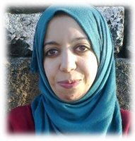

Sana BENGANNOUNE
Projet d'une developpeuse
Je me prépare d’être une développeuse web ayant des compétences et d’être capable de participer à la réalisation
des nouveaux projets au niveau de la conception et de la programmation.
LANGUES & COMPETENCES
- Design : Adobe XD, Photoshop
- Bureautique : Word, Excel, PowerPoint
- Anglais : Niveau Secolaire
- Francais: Niveau Professionnel
EXPERIENCES PROFESSIONNELLES
Nuzum IT solutions, Marrakech
Assistante de direction de 9/2009 à 11/2019
- Assister les réunions avec les clients et le service IT
- Suivre les projets en cours de réalisation
SRTTC des travaux topographiques et cadastraux, Marrakech
Technicienne informatique de 1/2009 à 6/2009
- Suivre et traiter les dossiers des projets
- Réalisation des plants pour les Terrains ou les immeubles à l’aide des logiciels informatiques
- Traitement des rapports et des PV
Groupe OCP Service informatique, Youssoufia
Stage fin de formation de 3/2007 à 4/2007
- Installation et administration Réseau informatique
- Installation et administration de pack informatique
- Maintenance de premier niveau
FORMATIONS
- Apprenante en première année : Formation professionnelle en programmation et développement web en 2019, YouCode à Youssoufia.
- Technicienne spécialisé : Réseaux et systèmes informatiques en 2007, ISTA à Marrakech.
- 2eme année universitaire : Economie et Gestion en 2005, Université Cadi Ayyad à Marrakech.
- Baccalauréat : Sciences Expérimentales en 2002, Lycée Kachekat à Youssoufia.
INTERETS
- La lecture: Elif shafak, Mohamed Choukri, Mostapha mahmud
- Le voyage: Des voyages organisés au maroc